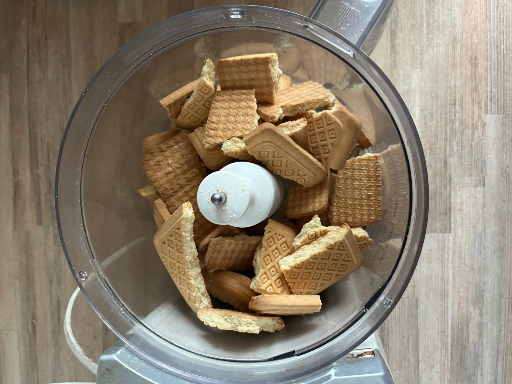

Пирожное "Картошка"
Пирожное "Картошка" — это десерт, получивший свое название благодаря внешнему виду. Он представляет собой крошку печенья, смешанную с какао и сгущенкой, сформированную в виде картофелины и обвалянную в какао-порошке.
Историки кулинарии утверждают, что современный вариант десерта появился в России в начале XX века по экономическим причинам. В трактирах и ресторанах оставалось много обрезков и крошек выпечки, поэтому повара начали готовить из остатков простой десерт, обваливая его в какао для маскировки непривлекательного вида.
В Советском Союзе «Картошка» стала любимым лакомством, сохранив свое первоначальное предназначение — утилизацию обрезков и экономию продуктов. Главное отличие заключалось в том, что советское пирожное готовили не из черствых или испорченных продуктов, а из свежих остатков коржей, смешанных со сливочным маслом, сахаром, молоком и яйцом.
Рецепт пирожного «Картошка»:
- Песочное печенье — 400 г
- Сгущённое молоко — 300 г
- Мягкое сливочное масло — 100 г
- Какао-порошок — 3 ст. л. (для теста) + 1 ст. л. (для обсыпки)
- Ванильный сахар — 10 г
- Разломите печенье на небольшие кусочки и измельчите в крошку с помощью блендера или скалки. Крошка должна быть однородной, без крупных фрагментов.

- В миске соедините измельчённое печенье, какао-порошок, мягкое сливочное масло и сгущённое молоко. Добавьте ванильный сахар для аромата и тщательно перемешайте массу до однородности. Если масса слишком жидкая, добавьте больше печенья; если густая — добавьте больше сгущёнки.
- Скатайте из полученной массы небольшие шарики или продолговатые заготовки, напоминающие картофелины.
- Обваляйте каждую «картошку» в какао, чтобы она равномерно покрылась.
- Уберите в холодильник минимум на 2 часа для застывания.
- Готовое пирожное "Картошка"
← Назад на главную